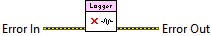

Error In describes error conditions that occur before this node run. With the following exception, this input provides standard error in functionality.
This node runs normally even if an error occurred before this node runs.
Writes all remaining log statements to the default log file if enabled, properly closes all files, and releases all listeners.

|
|
Error In describes error conditions that occur before this node run. With the following exception, this input provides standard error in functionality.
This node runs normally even if an error occurred before this node runs. |
|
|
Error Out contains error information. This output provides standard error out functionality. |